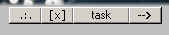
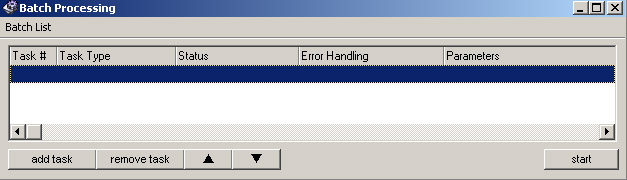
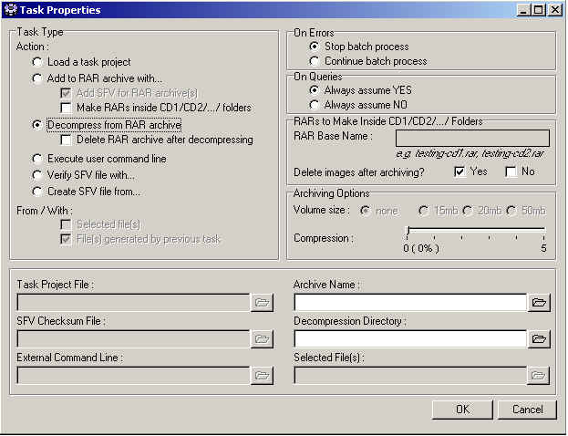

|
|
Batch Processing
Batch processing allows one to queue
up large numbers of tasks and process each
one automatically without the user's intervention. This is especially
useful if you intend
to do a lot of conversions but don't want to sit around waiting for one task to
finish... just
to set up the next one.
With RAR support and
multi-volume archiving in 15,000,000 and 20,000,000 bytes,
video distribution is considerably easier in VCDGear. Any task in the
VCDGear or
VideoCD sections can be queued up. External programs/batch files can also
be
added to the queue for execution.
Each task added to
the batch processor list has its own independent error handling.
For example, you can tell Task #10 to stop on ALL errors but Task #1 to #9
to continue regardless of errors.
STEP 1

A task can be
opened or saved from a file. Clicking on the [task] button will show you
the
options for that. A third option will also be available and this will open
the batch
processor (batch list).
To Save Task Project, you need to
have everything set up -- the input and output filenames,
the extraction/conversion type, etc... If Save Task doesn't do anything
when you click on it,
it means that you must have left out something.
Tired of going to
Save Task Project, entering a filename to save task file, clicking on OK,
then adding it into the batch processor (see below)? The
===> button makes a temporary
task file and automatically
queues it into the batch processor... saving you a bunch of
clicks and keystrokes!

The batch processor
holds the list of queued tasks. Tasks can be added/moved/deleted
from the queue at any point. Clicking on [add task] will bring up the Task
Properties screen.
STEP 2

A task is split into 2 areas: the
Task Type and Error Handling. You can queue a task
file that you just saved in either the VCDGear page or VideoCD page. You
can also
RAR up specific files or all output files generated by previous task!
Automatic
unRAR and Delete RAR options can be queued, and user command line.
STEP 3
Select the Error
Handling types. Queries in VCDGear are the message prompts that ask
YES/NO. This type of prompt can appear when (for example) VCDGear
believes
that you may not have enough disk space to run a certain task.
STEP 4
Loading a task project - Loads a task project file that you saved earlier.
Add to RAR
archive with...
WITH: Selected file(s)
WITH: File(s) generated by previous task
Archiving with a
volume size and amount of compression (0% means no compression) can
be done in the Archiving Options section. If you choose 15/20/16Mb for the
volume size, you do
not specify the -v parameter in the Compression Parameters of the VCDGear
Configuration.
VCDGear will automatically add it in for you.
To specify your own
volume size not listed in VCDGear, select None. In the VCDGear
Configuration under Compression Parameters, add the necessary volume size
parameter.
You can add each file to a SFV Checksum file by enabling the option for this.
Enabling Make RARs inside CD1/CD2/.../ folders puts
each set of RAR files (for each image
that you have) inside the CD1, CD2, CD3, etc.., folder.
You can specify the base naming
convention for each RAR file and the ability to delete the
images after they have been archived
properly.
Decompress from RAR archive
Decompress RAR files into a specified directory. Multiple RAR file decompress is possible.
Enabling Delete RAR
archive after decompression deletes the .rar archive and all .r?? files
after
you have decompressed it.
WARNING:
Delete RAR archive has been known to delete your files EVEN if the
decompression failed. This is due to a bug in WinRAR v2.80 which tells
VCDGear
that everything went fine (and poof.. files are gone!). I have spoken with
the author
on this bug and he said it will be fixed in v2.90. Use the latest version
of WinRAR
and be cautious.
I am not responsible for loss of archive files in any way so don't say I didn't warn you :-)
Execute user command line - execute a DOS command
Verify SFV file
with...
WITH: Selected file(s)
WITH: File(s) generated by previous task
Validates files by comparing them against the CRC data inside the SFV
file. The SFV Checksum
file must be selected for this to work.
Create SFV file
from...
FROM: Selected file(s)
FROM: File(s) generated by previous task
Creates an SFV file from a single file or several other files. The SFV
Checksum file must be entered
for this to work.
STEP 5
Click OK to get out
of the Task Properties. Your task should now be listed in the Batch
Processor. You can right-click on a task to edit its properties at any
point in time.
Click [start] to
begin running all queued tasks! If
a task dies and you don't know why,
check the Log page.